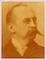

Beaubien-Perrault-Benington - Person Sheet
Beaubien-Perrault-Benington - Person Sheet

NameThomas Chase Casgrain577
Birth28 Jul 1852, Detroit, MI, USA2
Death29 Dec 1916, Montréal, Quebec578
Burial2 Jan 1917, Notre-Dame-des-Neiges, Montréal, Quebec46
Occupationavocat
FatherSen. Charles Eusèbe Casgrain (1825-1907)
MotherCharlotte Chase (1826-)
Spouses
Marriage15 May 1878, Québec, Québec580
ChildrenAlexander Chase (-1941)
Marriage16 Feb 1915, Paris. France580
Notes for Thomas Chase Casgrain
K.C. Grandson of THomas Chase.
le seul canadien-francais a avoir fait parti de l’equipe qui a poursuivi Louis Riel
[Wallace] Bar 1877, QC 1887. Batonnier du Québec 1894. MLA for
Québec (1886-90), Montmorency (1892-6), Attorney-general in
Boucherville and Taillon administrations. MP for Montmorency (1896-
1904). Chm of International Joint Commission (1911-4). Postmaster
general in Borden administration (1914-6).
576 Prof of Criminal Law (Laval)
21 Né à Détroit, état de Michigan, le 28 juillet 1852, du mariage du docteur Charles-Eusèbe Casgrain, plus tard sénateur du Canada, et de Charlotte Mary Chase. Il fut admis au barreau le 17 juillet 1877, et exerça sa profession à Québec jusqu'à 1897, puis à Montréal jusqu'à sa mort. Député de Québec (comté) puis de Montmorency à la législature de Québec de 1886 à 1896, M. Casgrain fut procureur général de la province de Québec de 1891 à 1896. Élu député de Montmorency à la Chambre des Communes le 23 juin 1896, il fut ministre des Postes du Canada de 1914 à sa mort, arrivée à Ottawa le 29 décembre 1916. Au cours de sa belle carrière, M. Casgrain fut professeur de droit criminel à l'université Laval, bâtonnier du barreau de Québec et de toute la province, président de la section canadienne de la Commission des Eaux Limitrophes, etc, etc. "Comme professeur M. Casgrain a occupé avec distinction la chaire d'enseignement, comme avocat il a été le vir probus, dont parle Cicéron; comme homme public, il a joué un rôle considérable et a rendu de grands services à son pays >.
22 [Né à Détroit, dans l'État du Michigan, le 28 juillet 1852, fils de Charles-Eugène (Charles-Eusèbe) Casgrain, médecin et sénateur de 1887 à 1907, et de Charlotte
Chase.]
Fit ses études au séminaire de Québec de 1867 à 1873 et à l'université Laval à Québec.
Admis au barreau de la province de Québec le 17 juillet 1877, il mena dès lors une double carrière dans l'enseignement et dans la pratique du droit. Exerça surtout
sa profession à Québec et s'associa, de 1877 à 1881, à Guillaume Amyot, député à la Chambre des communes de 1881 à 1896. Se joignit en 1881 à la société
Langlois, Larue et Angers, puis fit ensuite partie du cabinet des avocats Casgrain, Angers et Hamel. Substitut du procureur à la Cour d'assises pendant plusieurs
années et avocat de la Couronne pour le district de Québec en 1882. Reçu docteur en droit de l'université Laval en 1883. Créé conseil en loi de la reine par le
gouvernement du Canada le 9 avril 1887. Membre de la commission chargée de la révision et de la modification du Code de procédure civile de la province de
Québec de 1893 à 1896. Bâtonnier du barreau de Québec en 1892, 1893 et 1894. Bâtonnier de la province de 1893 à 1895. Créé conseil en loi de la reine par le
gouvernement de la province de Québec le 19 mai 1899. Dans le domaine de l'enseignement, il fut professeur agrégé de droit criminel à l'université Laval à Québec
de 1879 à 1885, puis professeur titulaire de 1884 à 1917. Secrétaire de la faculté de droit de 1880 à 1887 et membre du conseil de cette université de 1915 à 1917.
Élu député conservateur dans le comté de Québec en 1886. Ne s'est pas représenté en 1890. Procureur général dans le cabinet de Boucherville du 21 décembre
1891 au 12 novembre 1892. Élu dans Montmorency aux élections de mars 1892. Fut de nouveau procureur général dans le cabinet Taillon du 31 décembre 1892 au
11 mai 1896. Démissionna le 23 mai 1896. Élu député conservateur à la Chambre des communes dans Montmorency en 1896. Réélu en 1900 et défait en 1904.
Réélu sans opposition à l'élection partielle du 7 novembre 1914. Ministre des Postes du Canada dans le cabinet Borden du 20 octobre 1914 au 29 décembre 1916,
date de son décès.
Récipiendaire de la médaille du gouverneur général en 1877. Président du Club Cartier en 1879 et 1880. Vice-président de l'Association du barreau du Canada en
1896. Directeur de la compagnie de publication du Journal en 1901. Membre de la Société du parler français au Canada en 1902 et de la Ligue antialcoolique en
1907. Président du Club Lafontaine en 1908 et 1909. Président de la Joint High Commission de 1911 à 1914. Membre de l'Union Club, du St. James Club, du
Club de la garnison, des clubs Rideau et Saint-Denis, du Canadian Club, du Mount Royal Club et du Montreal Club.
Décédé en fonction à Ottawa, le 29 décembre 1916, à l'âge de 64 ans et 5 mois. Inhumé à Montréal, dans le cimetière Notre-Dame-des-Neiges, le 2 janvier 1917.
Avait épousé dans la paroisse Notre-Dame de Québec, le 15 mai 1878, Marie-Anne- Louise LeMoine, fille d'Alexandre LeMoine, notaire, et de Julie
Henriette-Émilie Massüe; [puis, à Paris, le 16 février 1915, Marie-Louise Berthiaume, veuve de René Masson].
Petit-fils de Charles-Eusèbe Casgrain. Beau-frère d'Auguste-Réal Angers. Neveu de Philippe Baby Casgrain, député à la Chambre des communes de 1872 à
1891, et de Charles-Alphonse-Pantaléon Pelletier. Petit-neveu de Pierre Beaubien. Cousin de Joseph-Philippe Baby Casgrain, sénateur de 1900 à 1939.
Petit-cousin de Léon Casgrain et de Perreault Casgrain.
Bibliographie: DBC
le seul canadien-francais a avoir fait parti de l’equipe qui a poursuivi Louis Riel
[Wallace] Bar 1877, QC 1887. Batonnier du Québec 1894. MLA for
Québec (1886-90), Montmorency (1892-6), Attorney-general in
Boucherville and Taillon administrations. MP for Montmorency (1896-
1904). Chm of International Joint Commission (1911-4). Postmaster
general in Borden administration (1914-6).
576 Prof of Criminal Law (Laval)
21 Né à Détroit, état de Michigan, le 28 juillet 1852, du mariage du docteur Charles-Eusèbe Casgrain, plus tard sénateur du Canada, et de Charlotte Mary Chase. Il fut admis au barreau le 17 juillet 1877, et exerça sa profession à Québec jusqu'à 1897, puis à Montréal jusqu'à sa mort. Député de Québec (comté) puis de Montmorency à la législature de Québec de 1886 à 1896, M. Casgrain fut procureur général de la province de Québec de 1891 à 1896. Élu député de Montmorency à la Chambre des Communes le 23 juin 1896, il fut ministre des Postes du Canada de 1914 à sa mort, arrivée à Ottawa le 29 décembre 1916. Au cours de sa belle carrière, M. Casgrain fut professeur de droit criminel à l'université Laval, bâtonnier du barreau de Québec et de toute la province, président de la section canadienne de la Commission des Eaux Limitrophes, etc, etc. "Comme professeur M. Casgrain a occupé avec distinction la chaire d'enseignement, comme avocat il a été le vir probus, dont parle Cicéron; comme homme public, il a joué un rôle considérable et a rendu de grands services à son pays >.
22 [Né à Détroit, dans l'État du Michigan, le 28 juillet 1852, fils de Charles-Eugène (Charles-Eusèbe) Casgrain, médecin et sénateur de 1887 à 1907, et de Charlotte
Chase.]
Fit ses études au séminaire de Québec de 1867 à 1873 et à l'université Laval à Québec.
Admis au barreau de la province de Québec le 17 juillet 1877, il mena dès lors une double carrière dans l'enseignement et dans la pratique du droit. Exerça surtout
sa profession à Québec et s'associa, de 1877 à 1881, à Guillaume Amyot, député à la Chambre des communes de 1881 à 1896. Se joignit en 1881 à la société
Langlois, Larue et Angers, puis fit ensuite partie du cabinet des avocats Casgrain, Angers et Hamel. Substitut du procureur à la Cour d'assises pendant plusieurs
années et avocat de la Couronne pour le district de Québec en 1882. Reçu docteur en droit de l'université Laval en 1883. Créé conseil en loi de la reine par le
gouvernement du Canada le 9 avril 1887. Membre de la commission chargée de la révision et de la modification du Code de procédure civile de la province de
Québec de 1893 à 1896. Bâtonnier du barreau de Québec en 1892, 1893 et 1894. Bâtonnier de la province de 1893 à 1895. Créé conseil en loi de la reine par le
gouvernement de la province de Québec le 19 mai 1899. Dans le domaine de l'enseignement, il fut professeur agrégé de droit criminel à l'université Laval à Québec
de 1879 à 1885, puis professeur titulaire de 1884 à 1917. Secrétaire de la faculté de droit de 1880 à 1887 et membre du conseil de cette université de 1915 à 1917.
Élu député conservateur dans le comté de Québec en 1886. Ne s'est pas représenté en 1890. Procureur général dans le cabinet de Boucherville du 21 décembre
1891 au 12 novembre 1892. Élu dans Montmorency aux élections de mars 1892. Fut de nouveau procureur général dans le cabinet Taillon du 31 décembre 1892 au
11 mai 1896. Démissionna le 23 mai 1896. Élu député conservateur à la Chambre des communes dans Montmorency en 1896. Réélu en 1900 et défait en 1904.
Réélu sans opposition à l'élection partielle du 7 novembre 1914. Ministre des Postes du Canada dans le cabinet Borden du 20 octobre 1914 au 29 décembre 1916,
date de son décès.
Récipiendaire de la médaille du gouverneur général en 1877. Président du Club Cartier en 1879 et 1880. Vice-président de l'Association du barreau du Canada en
1896. Directeur de la compagnie de publication du Journal en 1901. Membre de la Société du parler français au Canada en 1902 et de la Ligue antialcoolique en
1907. Président du Club Lafontaine en 1908 et 1909. Président de la Joint High Commission de 1911 à 1914. Membre de l'Union Club, du St. James Club, du
Club de la garnison, des clubs Rideau et Saint-Denis, du Canadian Club, du Mount Royal Club et du Montreal Club.
Décédé en fonction à Ottawa, le 29 décembre 1916, à l'âge de 64 ans et 5 mois. Inhumé à Montréal, dans le cimetière Notre-Dame-des-Neiges, le 2 janvier 1917.
Avait épousé dans la paroisse Notre-Dame de Québec, le 15 mai 1878, Marie-Anne- Louise LeMoine, fille d'Alexandre LeMoine, notaire, et de Julie
Henriette-Émilie Massüe; [puis, à Paris, le 16 février 1915, Marie-Louise Berthiaume, veuve de René Masson].
Petit-fils de Charles-Eusèbe Casgrain. Beau-frère d'Auguste-Réal Angers. Neveu de Philippe Baby Casgrain, député à la Chambre des communes de 1872 à
1891, et de Charles-Alphonse-Pantaléon Pelletier. Petit-neveu de Pierre Beaubien. Cousin de Joseph-Philippe Baby Casgrain, sénateur de 1900 à 1939.
Petit-cousin de Léon Casgrain et de Perreault Casgrain.
Bibliographie: DBC